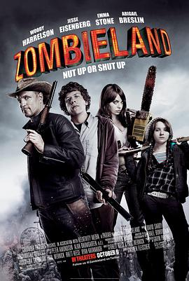

丧尸乐园 / Zombieland
又名：尸乐园(台) / 僵尸领地 / 僵尸之地
第二部比第一部精彩 that was very funny
作品信息
| 导演 | 鲁本·弗雷斯彻 |
| 编剧 | 雷特·瑞斯 / 保罗·韦尼克 |
| 主演 | 杰西·艾森伯格 / 伍迪·哈里森 / 艾玛·斯通 / 阿比盖尔·布雷斯林 / 安珀·赫德 / 比尔·默瑞 / 克里斯·伯恩斯 / 布莱斯·科里根 / 埃涅·赫德森 / 苏珊妮·拉切塞斯 / 琳恩·麦克阿瑟 / 贾斯汀·皮尔斯 / 哈罗德·雷米斯 / 雷特·瑞斯 / 维多利·范·图尔 / 克雷·沃克 / 麦克·怀特 / 内森·怀特 / Scott M. Yaffee / Derek Graf / Aquavian Abel / Cesar Aguirre / Jacob G. Akins / Hunter Aldridge / Elle Alexander / Cameron Jacob Alpert / Michael August / Melanie Booth / Daniel Burnley / Dalton Cole / Ernest Dancy / Travis Grant / Barry Hopkins / Amir Khan / Amir Kovacs / Shaun Lynch / Kurt McNew / 史蒂夫·普劳蒂 / 邱明 / Anthony Samples / Steve Warren |
| 类型 | 喜剧 / 恐怖 / 冒险 |
| 制片国家/地区 | 美国 |
| 语言 | 英语 |
| 上映日期 | 2009-09-25(奥斯汀奇幻电影节) / 2009-10-02(美国) |
| 片长 | 88分钟 |
| IMDb | tt1156398 |
说过什么
2020-01-01 11:56:45
看过 · 时间来自广播，短评来自标记页
第二部比第一部精彩 that was very funny
最后一次看到是 2026-08-01T11:05:47+10:00 · 豆瓣原页